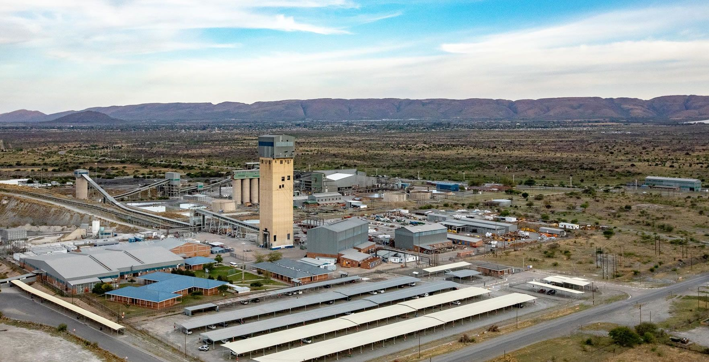

Sibanye Stillwater
Previously Lonmin
CMT Engineering, together with Water Hunters, implemented the anthropogenic project and to date we reduced their need for additional water by over 2.5 Million Cubes per annum; reducing their water cost by R 30 Million per year and the project paid itself back within 2 years. Project was initiated in 2012.
- Design and construction of 11kV overhead powerlines supplying all water transfer facilities implemented by CMT.
- All designing, supply and installation of pumping reticulation was successfully executed by CMT Engineering.